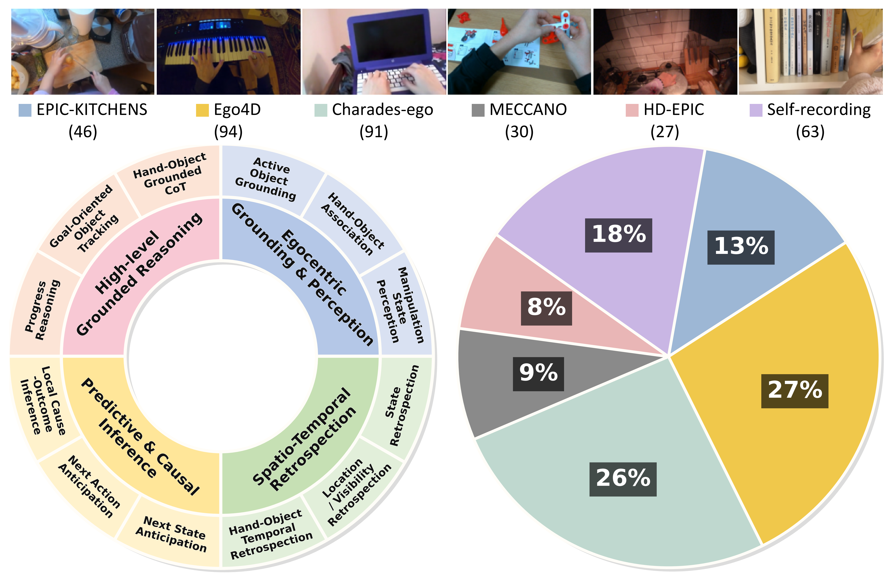
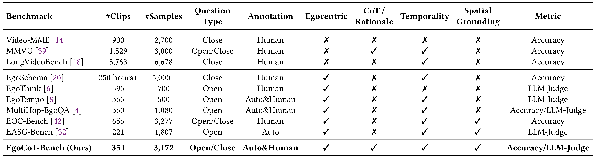

EgoCoT-Bench
Benchmarking Grounded and Verifiable Operation-Centric Chain-of-Thought Reasoning for MLLMs

Abstract
The rapid development of multimodal large language models (MLLMs) has led to growing interest in egocentric video understanding, particularly in recognizing fine-grained hand-object interactions, tracking object state changes over time, and reasoning about manipulative processes in dynamic first-person environments. However, existing egocentric video benchmarks provide limited support for evaluating fine-grained operation-centric reasoning and rarely examine whether model rationales are grounded in explicit spatio-temporal evidence. To address this gap, we introduce EgoCoT-Bench, a fine-grained egocentric benchmark for grounded and verifiable operation-centric reasoning with explicit step-by-step rationale annotations. EgoCoT-Bench comprises 3,172 verifiable QA pairs over 351 egocentric videos, organized into 4 task groups and 12 subtasks spanning perception, retrospection, anticipation, and high-level reasoning. The benchmark is constructed through an STSG-guided generation framework and further refined by human annotators to ensure correctness, egocentric relevance, and fine-grained annotation quality. Experimental results show that egocentric fine-grained reasoning remains highly challenging, and further reveal that many multimodal models produce correct answers with inconsistent supporting evidence.
Dataset at a Glance
- 351 egocentric videos
- 3,172 verifiable QA pairs
- 4 task groups
- 12 fine-grained subtasks
- Annotations: answer, step-by-step rationale, timestamps, bounding boxes, interaction evidence
- Metrics: Accuracy, Reasoning Score (R), and Spurious Correct Rate (SCR)
Task Definition
EgoCoT-Bench structures questions into four operation-centric task groups: Egocentric Grounding and Perception, Spatio-Temporal Retrospection , Predictive and Causal Inference, and High-level Grounded Reasoning, covering fine-grained grounding, retrospection, anticipation, and high-level reasoning.
Annotation Schema
Each accepted sample contains a question-answer pair, step-by-step reasoning, and structured spatio-temporal evidence. For website presentation, we expose the core annotation fields and merge reviewer-side duplicates back into the original fields.
- Sample identity:
qid,media_id,source - Task taxonomy:
big_category_en,sub_category_en - QA annotation:
question,choices,answer - Reasoning annotation:
reasoningwith step-by-step rationale - Evidence annotation: target objects, timestamps, bounding boxes, interaction relations, and focused evidence anchors
Internal review fields such as reviewer copies, review status, and reconciliation metadata are omitted here for clarity.
{
"qid": "ego_000000",
"media_id": "P01_01_7_scaled_910x512_4fps_887175d5",
"source": "media/P01_01_7_scaled_910x512_4fps_887175d5.mp4",
"big_category_en": "Egocentric Grounding & Perception",
"sub_category_en": "Active Object Grounding",
"question": "At 1.0 seconds, which operator body part is actively engaging the scene by holding a black pot near the sink with running water?",
"choices": {
"A": "right hand",
"B": "left hand",
"C": "chin",
"D": "forehead"
},
"answer": "B",
"reasoning": {
"step1": "At 00:01.00, the target appears in the lower-left region with bbox evidence consistent with left-hand placement in egocentric view.",
"step2": "The structured evidence and natural-language description jointly indicate that the left hand is holding the pot at this moment."
},
"evidence": {
"target_objects": [
{
"distinct_id": 3,
"label": "left hand"
}
],
"timestamps": [
"00:01.00",
"00:02.00",
"00:03.00"
],
"bboxes": [
{
"distinct_id": 3,
"time": "00:01.00",
"bbox": [329, 317, 470, 511]
}
],
"relations": [
{
"subject_name": "left hand",
"predicate": "near",
"object_name": "bottle",
"time": ["00:01.00", "00:01.00"]
},
{
"subject_name": "camera wearer (operator)",
"predicate": "manipulates objects using",
"object_name": "left hand",
"time": ["00:01.00"]
}
],
"focus_times": ["00:01.00"],
"focused_bboxes": [
{
"distinct_id": 3,
"time": "00:01.00",
"bbox": [329, 317, 470, 511]
}
]
}
}Overall Statistics
Overall statistics of EgoCoT-Bench, including an overview of benchmark dimensions and the distribution of video sources.

Figure 2. Overall statistics of EgoCoT-Bench.
EgoCoT-Bench Leaderboard
Results are reported as accuracy (%). Models are ranked globally by Mean. 🥇 🥈 🥉 indicate the top-3 models. Human is shown as a reference row and is not ranked.
Orange Proprietary model Blue Open-source model Green Human reference
| # | Method | Mean |
EGP
Egocentric Grounding & Perception |
STR
Spatio-Temporal Retrospection |
PCI
Predictive & Causal Inference |
HGR
High-level Grounded Reasoning |
||||||||||||
|---|---|---|---|---|---|---|---|---|---|---|---|---|---|---|---|---|---|---|
| AOG | HOA | MSP | Mean | SR | LVR | HOTR | Mean | NSA | NAA | LCOI | Mean | PR | HGC | GOT | Mean | |||
| – | Human | 95.93 | 96.18 | 93.86 | 97.18 | 96.11 | 93.96 | 95.36 | 96.88 | 94.96 | 98.47 | 94.44 | 95.00 | 96.32 | 98.71 | 97.90 | 91.98 | 96.34 |
| 1 🥇 | Qwen3.5-27B | 71.28 | 68.26 | 61.40 | 84.51 | 71.85 | 72.83 | 67.74 | 59.38 | 69.10 | 84.65 | 68.69 | 73.33 | 77.03 | 77.68 | 80.67 | 34.43 | 65.30 |
| 2 🥈 | Qwen3.5-Plus | 70.68 | 68.26 | 62.28 | 85.92 | 72.39 | 67.55 | 60.69 | 53.12 | 62.67 | 85.20 | 70.71 | 74.72 | 78.21 | 81.12 | 82.77 | 35.85 | 67.64 |
| 3 🥉 | Qwen3.5-397B-A17B | 70.11 | 68.26 | 58.77 | 87.79 | 72.39 | 69.81 | 59.07 | 56.25 | 62.55 | 84.95 | 68.18 | 70.83 | 76.11 | 78.97 | 83.61 | 38.68 | 68.08 |
| 4 | Qwen3.5-122B-A10B | 69.96 | 68.26 | 61.40 | 86.38 | 72.39 | 70.72 | 62.70 | 56.25 | 65.11 | 81.63 | 70.71 | 73.61 | 76.32 | 79.83 | 79.41 | 30.19 | 64.28 |
| 5 | GPT-5.2 | 67.91 | 64.92 | 62.28 | 72.30 | 66.62 | 67.55 | 59.88 | 59.38 | 62.42 | 84.69 | 64.14 | 72.22 | 75.68 | 65.24 | 84.03 | 42.92 | 64.86 |
| 6 | Qwen3-VL-Plus | 67.12 | 69.21 | 61.40 | 77.00 | 70.24 | 69.70 | 54.66 | 56.25 | 59.75 | 84.69 | 66.16 | 71.94 | 76.00 | 68.53 | 77.54 | 32.70 | 60.53 |
| 7 | Qwen3-VL-32B | 67.09 | 67.78 | 62.28 | 79.81 | 70.38 | 64.53 | 55.04 | 68.75 | 58.76 | 84.18 | 70.20 | 71.67 | 76.53 | 69.10 | 79.83 | 27.83 | 60.03 |
| 8 | GPT-5.1 | 66.71 | 64.20 | 63.16 | 77.00 | 67.69 | 66.04 | 49.40 | 56.25 | 55.23 | 86.99 | 67.17 | 70.56 | 76.63 | 68.24 | 79.83 | 45.28 | 65.15 |
| 9 | Qwen3-VL-235B-A22B | 65.86 | 67.54 | 57.02 | 77.00 | 68.63 | 71.32 | 52.82 | 56.25 | 59.14 | 85.97 | 68.18 | 62.50 | 73.37 | 70.82 | 78.99 | 27.36 | 60.18 |
| 10 | Qwen3-VL-8B | 65.42 | 69.54 | 59.29 | 81.60 | 71.43 | 64.02 | 60.69 | 59.38 | 61.75 | 83.03 | 63.13 | 64.72 | 71.91 | 59.91 | 78.15 | 25.00 | 55.43 |
| 11 | Qwen3-VL-30B-A3B | 64.63 | 62.44 | 61.06 | 82.16 | 67.88 | 65.15 | 65.86 | 62.50 | 65.49 | 81.89 | 59.09 | 66.94 | 71.47 | 66.52 | 73.11 | 9.05 | 51.10 |
| 12 | InternVL3.5-14B | 64.09 | 56.32 | 56.14 | 75.12 | 61.66 | 56.98 | 63.71 | 75.00 | 61.92 | 78.32 | 65.66 | 70.00 | 72.53 | 61.37 | 72.27 | 36.79 | 57.54 |
| 13 | InternVL3.5-8B | 64.06 | 56.32 | 61.40 | 70.89 | 61.26 | 54.34 | 67.74 | 68.75 | 63.30 | 80.36 | 66.16 | 67.22 | 72.42 | 66.95 | 73.11 | 25.94 | 56.37 |
| 14 | InternVL3.5-4B | 61.95 | 58.71 | 59.65 | 73.24 | 63.00 | 48.30 | 54.44 | 62.50 | 52.71 | 81.63 | 59.60 | 63.06 | 70.00 | 64.81 | 75.63 | 38.21 | 60.32 |
| 15 | InternVL3.5-2B | 61.79 | 50.60 | 63.16 | 79.81 | 60.86 | 58.11 | 66.94 | 71.88 | 64.18 | 77.30 | 59.09 | 58.33 | 66.32 | 60.94 | 71.01 | 26.42 | 53.73 |
| 16 | LLaVA-OneVision-1.5-8B | 60.81 | 53.94 | 58.77 | 74.65 | 60.59 | 57.36 | 51.61 | 40.62 | 53.09 | 82.14 | 69.19 | 61.94 | 71.79 | 68.67 | 71.01 | 21.23 | 54.76 |
| 17 | LLaVA-OneVision-1.5-4B | 60.78 | 55.74 | 54.39 | 72.30 | 60.27 | 61.51 | 55.04 | 40.62 | 56.62 | 81.38 | 61.11 | 61.67 | 69.68 | 63.95 | 73.11 | 21.23 | 53.88 |
| 18 | InternVL3.5-1B | 53.91 | 41.77 | 55.26 | 69.95 | 51.88 | 44.91 | 51.21 | 75.00 | 50.06 | 64.29 | 55.56 | 56.94 | 59.68 | 55.36 | 67.65 | 32.55 | 52.56 |
| 19 | LLaVA-NeXT-Video-7B | 44.26 | 35.08 | 55.26 | 46.95 | 41.55 | 46.42 | 40.93 | 56.25 | 43.38 | 62.24 | 48.99 | 48.61 | 54.32 | 33.91 | 49.58 | 17.45 | 34.26 |
The table is globally sorted by Mean, while model type is only indicated by method-name color.
Browsable Examples
Task: Local Cause-Outcome Inference
Question: Which recent action most directly caused the observed local outcome?
Answer: B
Rationale: The operator first grasps the cap, rotates it, and then the bottle becomes open. The twisting action most directly explains the state change.
Timestamps: 00:05.2–00:07.4
Evidence: Add one or two evidence frames with bbox below if needed.
Task: Goal-Oriented Object Tracking
Question: Which object is being retained for the next procedural step?
Answer: C
Rationale: Although multiple objects appear, only one remains functionally relevant to the next manipulation goal and is carried across interaction steps.
Timestamps: 00:12.1–00:17.6
Evidence: Add highlighted trajectory frames here.
Benchmark Comparison

Comparison with representative video and egocentric benchmarks.
Evaluation Protocol
EgoCoT-Bench evaluates not only final answer correctness, but also the quality of the reasoning process and the consistency between them.
- Accuracy (Acc): standard answer correctness.
- Reasoning Score (R): a 0–5 score evaluating the quality of model-generated reasoning.
- Spurious Correct Rate (SCR): the percentage of answer-correct cases with inconsistent underlying reasoning.
Submission format:
{
"qid": "sample_0001",
"predicted_answer": "B",
"reasoning": "The cap is twisted before the bottle becomes open, so the twisting action causes the state change."
}Prompting Strategy and Reasoning Judge
LLM-Assisted Question Generation
Candidate question-answer pairs are generated from verified spatio-temporal scene graph (STSG) evidence rather than free-form video descriptions. For each subtask, we first traverse task-specific evidence paths to identify grounded targets, associated temporal and spatial cues, interaction relations, and local action history. We then use an LLM to render these verified structural facts into a multiple-choice question, answer options, and step-by-step rationale in a fixed JSON format.
Across subtasks, the generation prompts follow a shared principle: each sample must be directly answerable from the provided structured evidence, contain a unique and unambiguous answer, include plausible distractors, and remain traceable to explicit temporal, spatial, and interaction cues. In this way, the LLM serves as a renderer of verified structural evidence rather than a source of unconstrained content invention.
Generic generation template:
You are generating benchmark QA for egocentric video understanding.
Generate ONE multiple-choice QA pair grounded only in the provided structured egocentric evidence.
General requirements:
1. The question must be answerable using only the provided evidence.
2. The answer must be unique and unambiguous.
3. Distractors should be plausible but contradicted by the evidence.
4. The reasoning must be step-by-step and grounded in timestamps, object states,
spatial localization, and interaction relations when available.
5. Return valid JSON only.
Output format:
{
"question": "...",
"choices": {"A": "...", "B": "...", "C": "...", "D": "..."},
"answer": "A/B/C/D",
"reasoning": {"step1": "...", "step2": "...", "step3": "..."}
}LLM Judge for Reasoning Quality
We use a separate LLM judge to score model-generated reasoning on a strict 0–5 scale. The judge takes as input the question, the ground-truth answer, the annotated reference reasoning, the predicted answer, and the predicted reasoning. It evaluates the predicted reasoning in terms of logical soundness, coherence, and consistency with the ground-truth answer, and returns a JSON object containing an integer score and a brief explanation.
Empty or missing reasoning outputs are assigned a score of 0. In implementation, we use deterministic decoding with temperature set to 0.0 and require strict JSON output.
Judge prompt:
You are an expert evaluator for video question answering reasoning.
Given:
- a question,
- the ground-truth answer,
- the annotated reference reasoning,
- the model-predicted answer, and
- the model-predicted reasoning,
score the predicted reasoning on a strict 0–5 scale.
Evaluate the reasoning based on:
1. logical soundness,
2. coherence,
3. consistency with the ground-truth answer, and
4. whether the reasoning supports the predicted answer in a faithful and non-contradictory manner.
Scoring rubric:
5: logically sound, coherent, and fully supports the correct answer.
4: mostly correct and coherent, with only minor redundancy or phrasing issues.
3: largely reasonable, but contains minor mistakes or incomplete support.
2: partially relevant, but includes major logical flaws or unsupported steps.
1: mostly incoherent, weakly relevant, or poorly connected to the answer.
0: empty, irrelevant, or fundamentally incorrect.
Return strict JSON:
{
"reasoning_score": <0-5 integer>,
"analysis": "<brief explanation>"
}Benchmark Results & Judge Validation
Fine-grained benchmark results on EgoCoT-Bench. The figure summarizes subtask-level answer accuracy, group-wise reasoning quality using Reasoning Score (R) and inverted SCR, and the agreement between LLM-based judgment and human consensus.

Figure 3. Fine-grained radar analysis and judge validation on EgoCoT-Bench.
Demo Videos
Access, License, and Review Notes
- Paper PDF: paper.pdf
- Dataset: Hugging Face Dataset Repository
- Leaderboard: add leaderboard link here if available
- License: specify your intended dataset and code licenses
This website is prepared as supplementary material for ACM Multimedia 2026 Dataset Track review.
BibTeX
@inproceedings{dai2026egocotbench,
title={EgoCoT-Bench: Benchmarking Grounded and Verifiable Operation-Centric Chain-of-Thought Reasoning for MLLMs},
author={Yang Dai and Jianxiang An and Tianwei Lin and Hongyang He and Hongzhe Huang and Wenqiao Zhang and Zheqi Lv and Siliang Tang and Yueting Zhuang},
booktitle={Proceedings of the ACM International Conference on Multimedia},
year={2026}
}